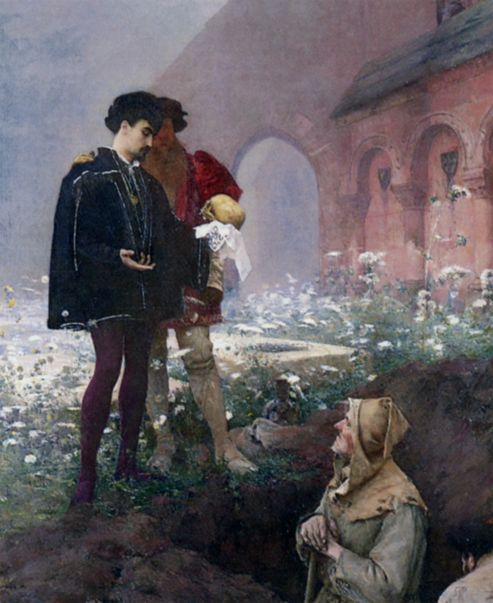

Пьеса "Гамлет" - это одна из самых известных и влиятельных пьес Уильяма Шекспира. Она была написана в начале 17-го века и считается одной из его самых великих трагедий.

Гамлет - принц Датский, который возвращается домой после смерти своего отца, короля. Гамлет узнает, что его отец был убит своим братом Клавдием, который затем женился на матери Гамлета, Гертруде, и стал новым королем. Гамлет ощущает глубокую боль и ярость от этого предательства и решает отомстить за смерть своего отца.
Пьеса исследует темы предательства, мести, смерти и сумасшествия. Гамлет становится одержимым идеей отомстить за своего отца и начинает действовать странно, чтобы скрыть свои намерения. Он прикидывается безумным, чтобы выяснить правду о смерти своего отца и поймать Клавдия на месте преступления.
Во время своих действий Гамлет сталкивается с рядом других персонажей, включая свою возлюбленную Офелию, ее отца Полония и других членов двора. Все они становятся жертвами его планов и интриг.
"Гамлет" является примером великого драматического искусства. Она известна своими сложными персонажами, глубокими эмоциональными конфликтами и философскими размышлениями о жизни, смерти и смысле существования. Пьеса также известна своими знаменитыми монологами, включая "Быть или не быть: вот в чем вопрос", который стал одной из самых известных цитат Шекспира.
"Гамлет" остается актуальной и популярной до сих пор. Ее темы и персонажи продолжают вдохновлять и вызывать интерес у читателей и зрителей по всему миру.